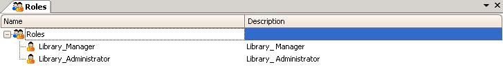

A role defines the different functions and responsibilities to perform within a business process. Roles are defined independently of the natural persons to whom these roles will be assigned. If you double click on the "Roles" node offered under the Workflow Preferences the following dialog will appear:  Role hierarchies defined in the IDE are for visualization purposes only, not intended to inherit permissions. Shortcuts
AvailabilityThese shortcuts are available since Genexus X Evolution 2 Upgrade 3.
|
| Pages | |
| Roles Properties | Roles Property |